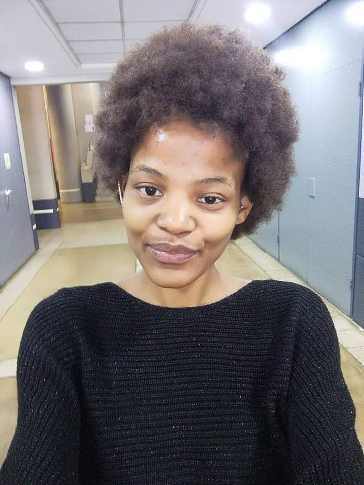
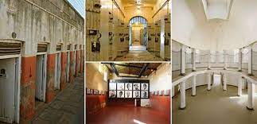
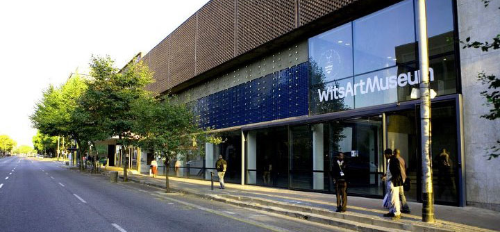
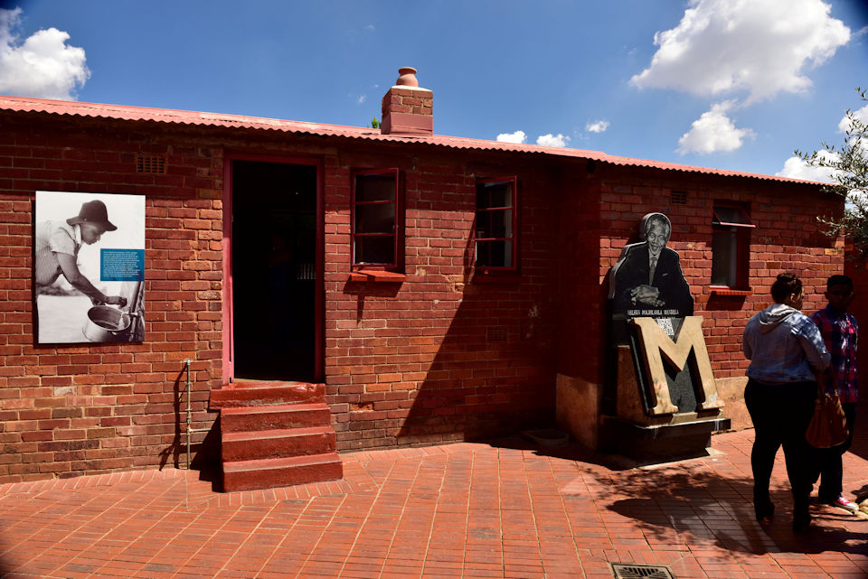

Moyaha Dipuo
 Software development student in training based in Johannesburg,South Africa. Passionate everything tech. Finds joy in learning to coding and everything football
City of Mbombela, Mpumalanga
 The picture below is of the city of Mbombela, based in the Mpamalanga province of South Africa. Mbombela is known for its rich history of the wildlife and nature adventure activities and attractions. I would love to visit Mobombela mainly to experience the beauty of nature in the Sudwala Caves, and God's Window in the Blyde River Canyon Nature Reserve, a lookout point which provides a panoramic view over the famous Drakensberg Escarpment.
The picture below is of the city of Mbombela, based in the Mpamalanga province of South Africa. Mbombela is known for its rich history of the wildlife and nature adventure activities and attractions. I would love to visit Mobombela mainly to experience the beauty of nature in the Sudwala Caves, and God's Window in the Blyde River Canyon Nature Reserve, a lookout point which provides a panoramic view over the famous Drakensberg Escarpment.
Foreign languages I'm interested in learning
Mandirin Chinese is the first subject I really want to learn beacuse it is a popular language in parts of China, as well as Singapore, an Asian country I have dreams of visiting one day. Swahili is a populat language in most African countries, learning Swahiliputs me in an advantage to break the communication barriers between me and my fellow Africans as we have so many indegenous languages and culture differences. Learning spanish because most of my favourite footballers are Spanish and do not know English very well, I would love to understand what they are saying in interviews post games because they mostly communicate in Spanish. The table below contains some of the translations of thw the things I have learnt so far from all three languages to English
| Mandirin Chinese | Swahili | Spanish |
|---|---|---|
| Hello (nǐ hǎo) 你好 | Hello: jambo/ hujambo/salama. | Hello! ¡Hola! |
| Thank you! (xiè xie) 谢谢 | How are you?: habari gani. | What time is it? ¿Qué hora es? |
| Good Morning (zǎo shang hǎo) 早上好 | Nice to meet you: nafurahi kukuona. | Thank you! ¡Gracias! |
Favourite subjects
- Full Stack Web Development
In this subject, I'm learning to design complete web applications and websites. I'm learning on frontend, backend, database and debugging of web applications or websites.
- Agile Rapid Skills Acquisition
I'm learning Agile techniques to solve soft skills problems.Some of the skills include communication skills, working in teams as well as individually, multitasking, planning and organisational skills.
- Engineering Business Systems for 4IR
In this subject I'm learning about different approaches to identifying and implementing the business processes, tasks, and transactions that are required to successfully operate a business.
- 4IR technologies Bootcamp
4IR technologies bootcamp is about employing educational technology systems that lay the foundation for the innovations of today and of the future. In this course I'm learning skills such as critical thinking, problem-solving, persistence, and collaboration.
Historical places worth visiting in Johannesburg, South Africa
- The constitutional Hill
 Constitution Hill is a living museum that tells the story of South Africa’s journey to democracy. The site is a former prison and military fort that bears testament to South Africa’s turbulent past and, today, is home to the country’s Constitutional Court, which endorses the rights of all citizens.
- The Wits Art Museum
 Wits Art Museum is home to an extraordinary collection of 15000 artworks. It includes historical, modern and contemporary African artworks and the Jack Ginsberg Centre for the Book Arts.
- The Mandela house in Soweto
 The Mandela House (The Nelson Mandela National Museum), the former home of Nelson and Winnie Mandela on 8115 Vilakazi Street, Orlando West, Soweto, Johannesburg, South Africa